Переглянуто 24 кандидати, відібрано 8. Усі оцінені візуально — живий браузер, реальні скріншоти, виміряні пікселі. Жодного текстового висновку «за описом».
Обидва варіанти офіційні, обидва проходять контраст на нашій картці.
Це рішення оком, тому ось кадр із реальною кнопкою Google, відрендереною з локаллю
uk прямо на нашому фоні #1E1B18:
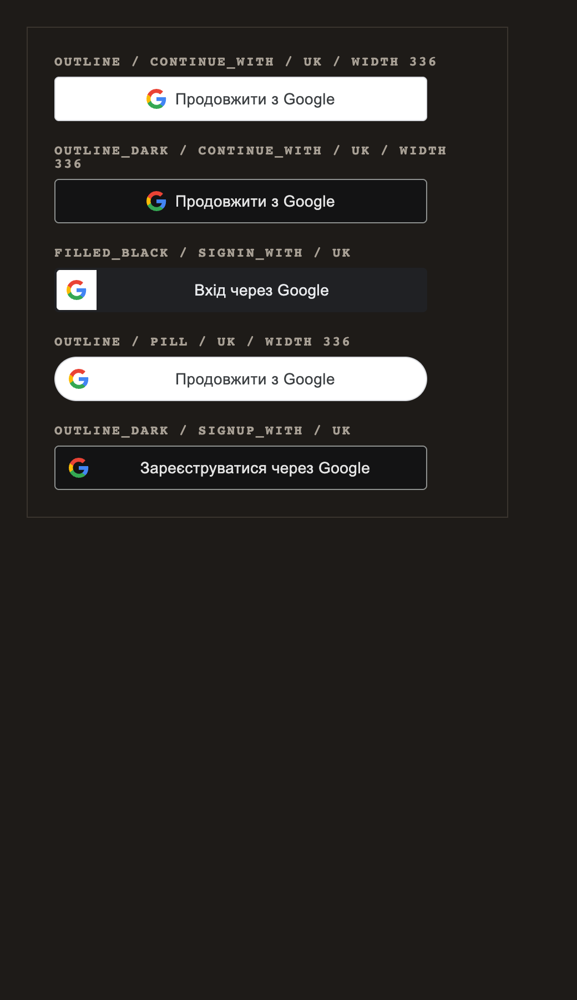
Він єдиний дає кнопці власну вагу на темній картці й читається як
чужий довірений елемент, а не як ще одна наша кнопка. Темний акуратніший, але зливається
з карткою: його заливка #131314 проти нашої #1E1B18 дає
1.08:1 — плитка практично невидима і тримається лише на тонкому
обведенні #8E918F. Тобто той самий бренд-актив працює слабше.
Агент не читав guidelines переказом: він запустив офіційний віджет Google і виміряв його.
Найближчий аналог нашої модалки, ще й українською. Порядок: Google → Microsoft → хайрлайн з «або» → поля → повноширинна головна кнопка. Біла кнопка Google на темній картці — саме той кадр, який ти хотів побачити оком.
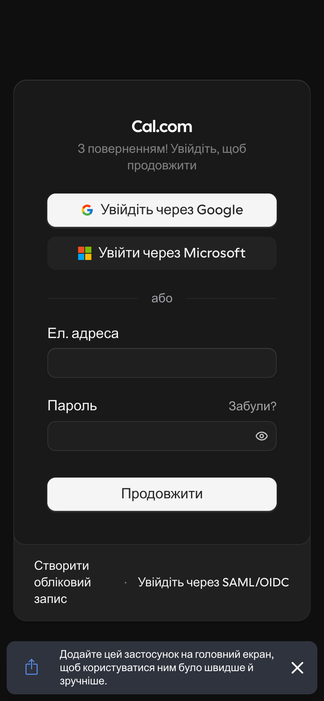
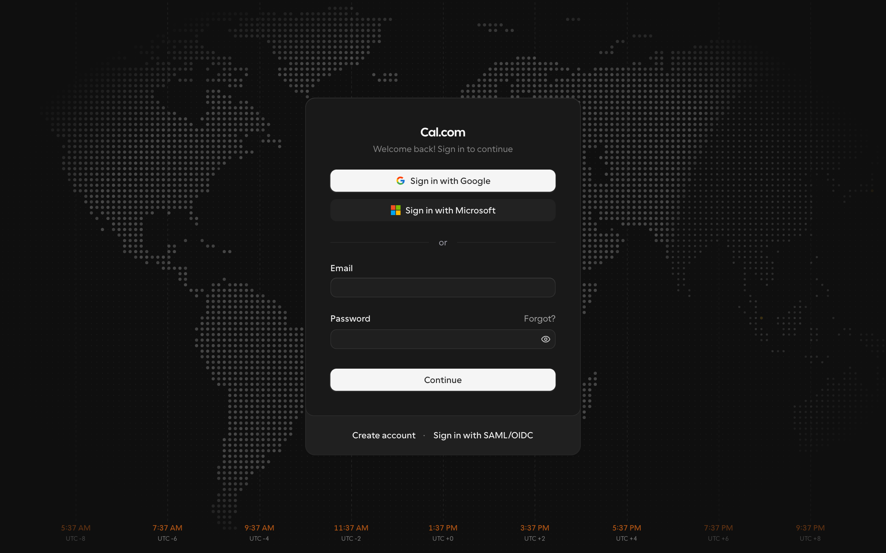
Та сама структура: провайдери зверху, «or», форма, акцентна кнопка внизу.
Єдиний насичений колір на екрані — головна кнопка (у нас це clay).
Доказ, що «соц-блок над формою» — мейнстрим, а не наша вигадка.
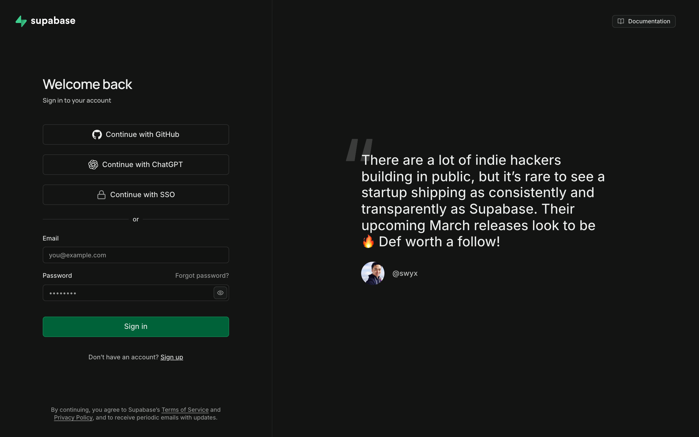
Найцінніша знахідка задачі. Агент викликав цю помилку живою. Supabase показує не рядок, а панель: іконка + жирний заголовок + причина + що робити + кнопка дії — і ставить її прямо над формою email, тобто перетворює тупик на наступний крок. У нашій спеці на цей стан передбачено чотири рядки тексту.
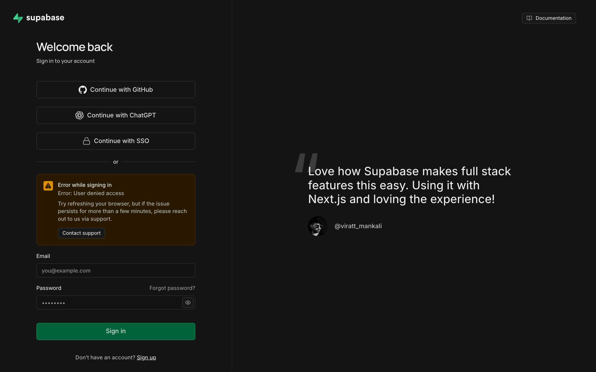
Email першим і головним, провайдери під ним однаковим стеком 320×40. Доводить, що рівноправність робиться однаковим розміром, а не однаковою вагою. Береться як другий варіант для агента №4.
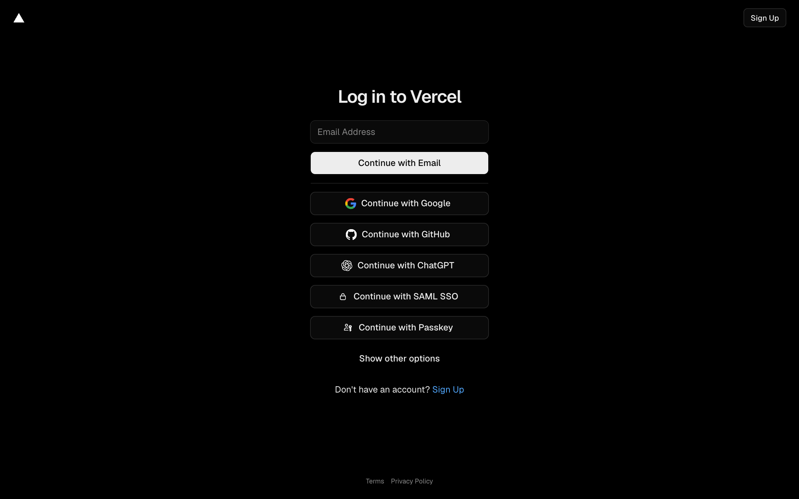
Готова відповідь на мобільну поверхню акаунта, яку ти
затвердив. Виміряні значення: виїзд знизу 0.5s cubic-bezier(0.32,0.72,0,1),
підложка rgba(0,0,0,0.4) тим самим таймінгом, радіус 10px 10px 0 0.
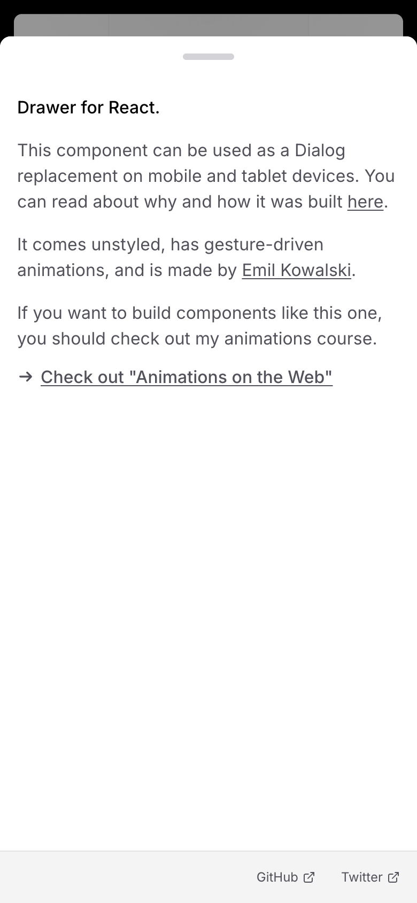
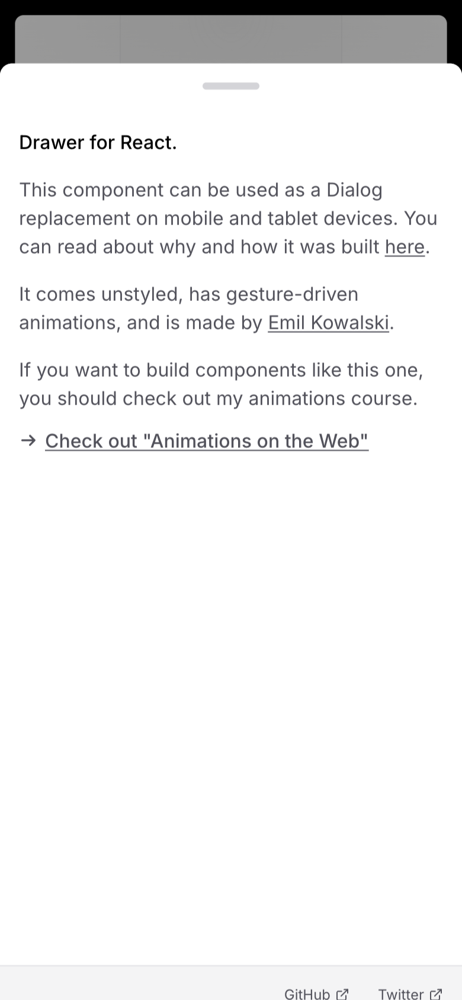
Еталон короткого службового діалогу: підложка й картка
їдуть разом, 0.15s, cubic-bezier(0.16,1,0.3,1), картка
scale(0.96) + 2% вгору. Без каскаду. Доказ, що 150–250 мс достатньо.
Не референс, а доказ. На повільному з'єднанні слот авторизації фізично відсутній у DOM до 2–3 секунд. Виміряні розміри для скелетона: гість 75×32, залогінений 307×34 (десктоп) і 66,5×34 (мобілка). Різниця 232px — якщо вгадати неправильно, шапка стрибне.
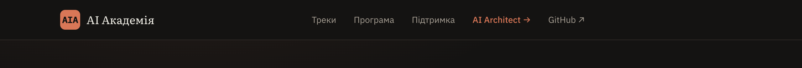
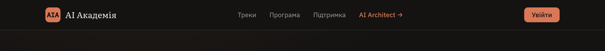
Linear — студія з бездоганною репутацією — малює «Continue with Google» своїм фіолетовим і взагалі без логотипа G. Це пряме порушення guidelines і рівно та помилка, від якої ти застерігав у брифі. Показано саме тому, що її зробила сильна команда.
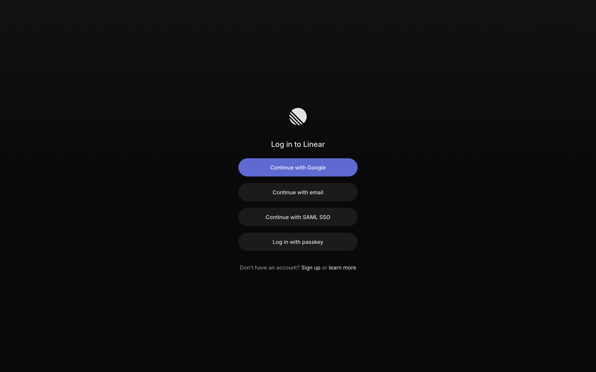
clay і не робити
її «як усі інші наші кнопки». Її впізнаваність і є та довіра, заради якої все затівалось.Офіційна кнопка Google — 40px, а ми щойно домовились про мінімальний тач-таргет 44×44 (питання 5). Масштабувати кнопку Google дозволено, але тоді вона перестає бути «стандартною, як усюди» — а це була твоя вимога дослівно. Тобто одна твоя вимога впирається в іншу, і вибір за тобою.
Агент виявив, що fonts.googleapis.com віддасть Google
Sans, якщо його попросити. Він свідомо не став цим користуватись і виніс питання
тобі, а не вирішив сам — бо технічна можливість не означає право використання.
Позначив явно, щоб агент №3 не наткнувся на цей URL і не вирішив, що так можна.
Далі: скажеш, що погоджено — запускаю агента №3 на погодженому наборі.
Повний розбір для нього лежить у references.md (689 рядків), цей екран —
скорочення для рішення.